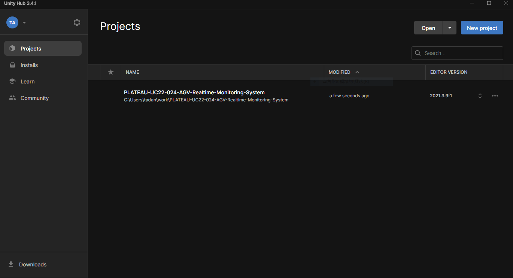
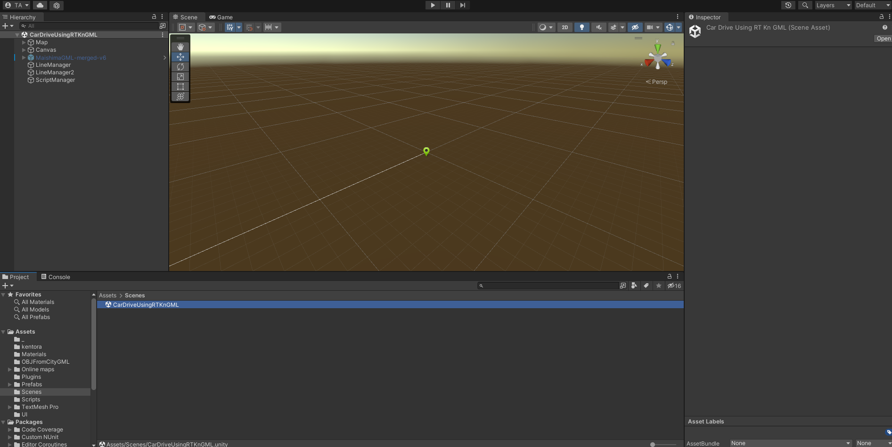
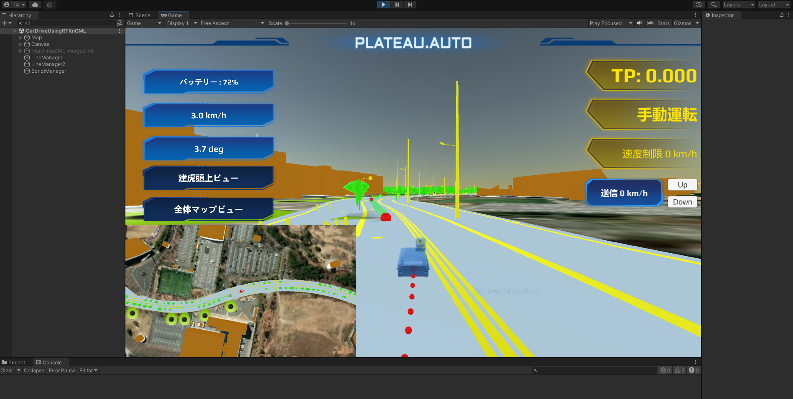

起動手順（実際の車両を利用）
シーン起動手順
Windows PCに本リポジトリをクローンします
UnityHubにて本プロジェクトを起動します 
Assets/Scenes/CarDriveUsingRTKnGML.unity を開きます 
Unityの再生ボタンを押します 
車両の環境
- ROS Noetic / ROS2 Galactic
- mqtt_bridge
- mqtt_bridgeはROSのトピックをJSONに変換し、MQTTサーバーに送るライブラリです
- ROS1, ROS2で仕様が異なるので、お使いの
- mqtt_bridge
ROS / ROS2を使って車両を構築します
下記の情報を、ROSメッセージで送信します
- 本プロジェクトでは車両の制御にAutowareを利用しているため、実際の車両で使う場合は適した型・トピック名に変更をしてください。
| 項目 | 型 | MQTTに送るトピック |
|---|---|---|
| バッテリー残量 | std_msgs.msg:Int8 | /BatteryLevel |
| 車速 | autoware_auto_vehicle_msgs.msg:VelocityReport | /vehicle/status/velocity_status |
| ステアリング角度 | autoware_auto_vehicle_msgs.msg:SteeringReport | /vehicle/status/steering_status |
| 自動運転モード | std_msgs.msg:Int8 | /EcuMode |
| 車両位置情報 | sensor_msgs.msg:NavSatFix | /NavSatFix |